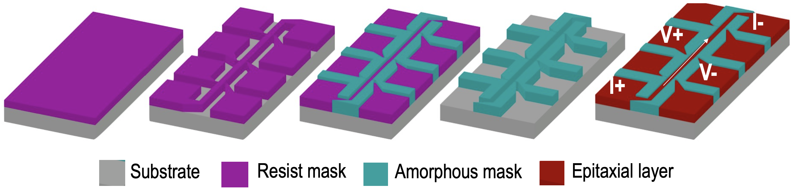
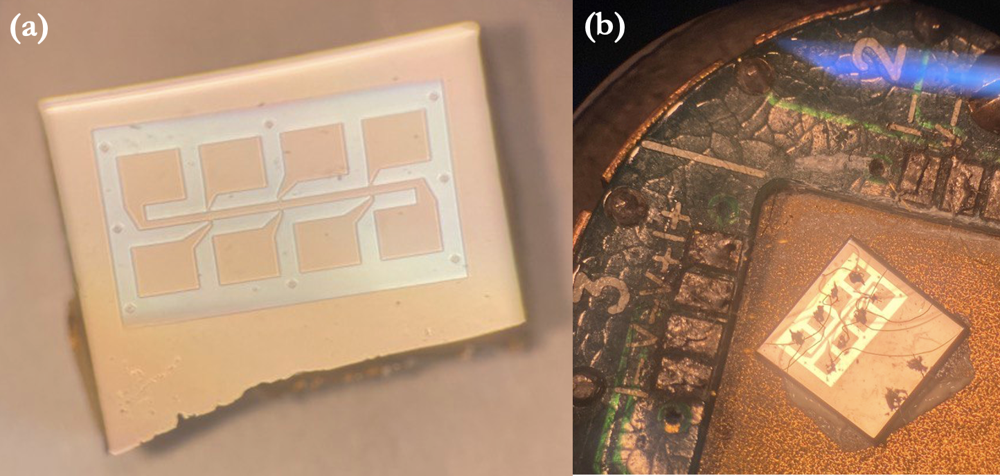

Device Fabrication • Electrical Transport • Quantum Materials
Hall-Bar Devices & Nonlinear Hall Transport
From fabrication of Hall-bar devices to low-temperature transport measurements and the study of nonlinear Hall response in electron-doped cuprate thin films.
Project Overview
Connecting device fabrication to electronic transport
Hall measurements provide one of the most direct experimental probes of charge transport in a material. By measuring both longitudinal and transverse voltage responses in a patterned device, it is possible to investigate resistivity, carrier type, carrier density, mobility, and more complex transport behavior.
During my research, I fabricated Hall-bar structures from superconducting thin films and used them for magnetotransport measurements over a range of temperatures and magnetic fields. The project combined lithography, thin-film processing, device preparation, cryogenic measurements, and transport analysis.
Device Design
Why use a Hall-bar geometry?
A Hall bar separates the electrical response into longitudinal and transverse components. Current is passed through the device, while voltage probes positioned along and across the current path allow the two resistivity components to be measured independently.
The longitudinal response gives ρxx, while transverse voltage probes provide ρyx. Measuring both quantities as functions of temperature and magnetic field provides a much richer picture of the electronic transport than a simple two-terminal resistance measurement.
Four-terminal transport measurements
In a four-terminal measurement, current is supplied through one pair of contacts while the voltage is measured using a separate pair. Because negligible current flows through the voltage-measurement circuit, the measured voltage is largely separated from lead and contact resistance, making this configuration particularly useful for precise transport measurements.
A Hall bar extends this principle by providing multiple voltage contacts. Longitudinal voltage probes measure the voltage drop along the direction of current flow, while transverse probes measure the Hall voltage perpendicular to the applied current.

With current driven through the device, the longitudinal voltage Vxx is measured along the current path, while the transverse voltage Vxy is measured across the Hall bar. Reversing the magnetic field is particularly useful for separating the symmetric longitudinal response from the antisymmetric Hall contribution.
The devices used in this work employed a six-probe Hall-bar geometry, enabling longitudinal and transverse transport measurements from the same patterned sample.
Fabrication
From epitaxial film to transport device
Fabrication began with superconducting epitaxial thin films. Lithography was used to define the Hall-bar geometry, followed by pattern transfer and device preparation for electrical measurements.
The fabricated device contains a narrow central current channel with transverse and longitudinal voltage probes. Large contact pads provide access to the patterned structure for electrical connection and low-temperature transport measurements.

Typical process flow
The fabrication sequence involved resist coating, lithographic pattern definition, development, pattern transfer, and electrical contacting. Depending on the specific process, dry etching or ion milling could be used to transfer the pattern into the film.
After fabrication, devices were mounted and electrically connected for transport measurements in a Physical Property Measurement System (PPMS).
Hall Effect
From transverse voltage to carrier information
In the simplest single-carrier picture, the Hall resistivity is linear in magnetic field. The slope defines the Hall coefficient, whose sign provides information about the dominant carrier type.
This simple relation works well for many materials, but strongly correlated systems can show considerably richer behavior. Deviations from linearity can contain information that is not visible in the conventional low-field Hall coefficient alone.
Nonlinear Transport
When the Hall response is no longer linear
In electron-doped cuprate thin films, the transverse resistivity can develop a measurable nonlinear magnetic-field dependence. Rather than being described only by a term proportional to B, higher-order contributions become important.
The cubic contribution provides an additional experimental quantity that can be followed as a function of temperature and doping. Its behavior becomes particularly interesting near regimes where the conventional Hall coefficient becomes small or changes sign.
A Hall coefficient close to zero does not necessarily imply the absence of mobile charge carriers. Competing electron-like and hole-like contributions can partially cancel in the linear Hall response while still producing measurable nonlinear transport.
Interpretation
A two-carrier picture
One useful framework for interpreting nonlinear Hall transport is a two-carrier model in which electron-like and hole-like carriers contribute simultaneously to the electrical response.
Starting from the Drude description for two carrier populations, longitudinal and transverse transport can be related to carrier densities and mobilities. Combining Hall data with additional transport measurements therefore provides a route toward separating contributions from different parts of the electronic structure.
This analysis becomes especially useful when the linear Hall coefficient alone gives an incomplete or ambiguous description of the system.
Broader Context
Why this matters
The Hall effect in cuprate superconductors is closely connected to the evolution of their electronic structure with temperature and doping. Studying nonlinear contributions provides an additional experimental handle on carrier reconstruction, competing transport channels, and the balance between electron-like and hole-like states.
For me, this project also illustrates the full experimental path from thin-film material to patterned device, cryogenic measurement, quantitative analysis, and interpretation of the underlying condensed-matter physics.
Research Output
Publications & further reading
Selected publications, transport figures, and related theoretical discussion will be added here as this project page develops.
For broader background on my experimental work and superconducting materials, see the Physics section of this website.
Explore physics notes →